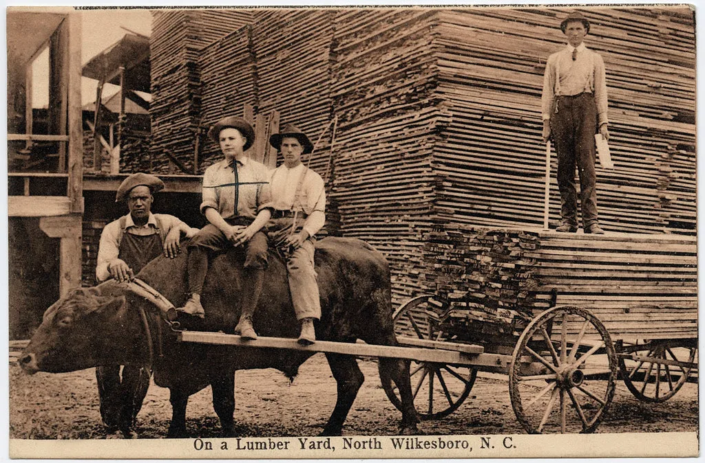
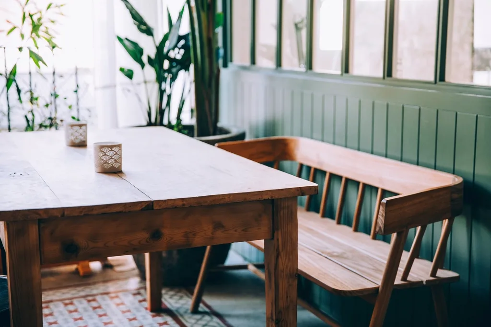
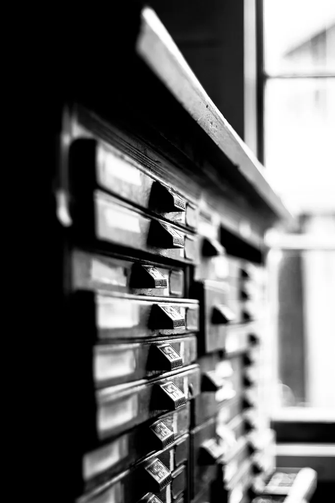
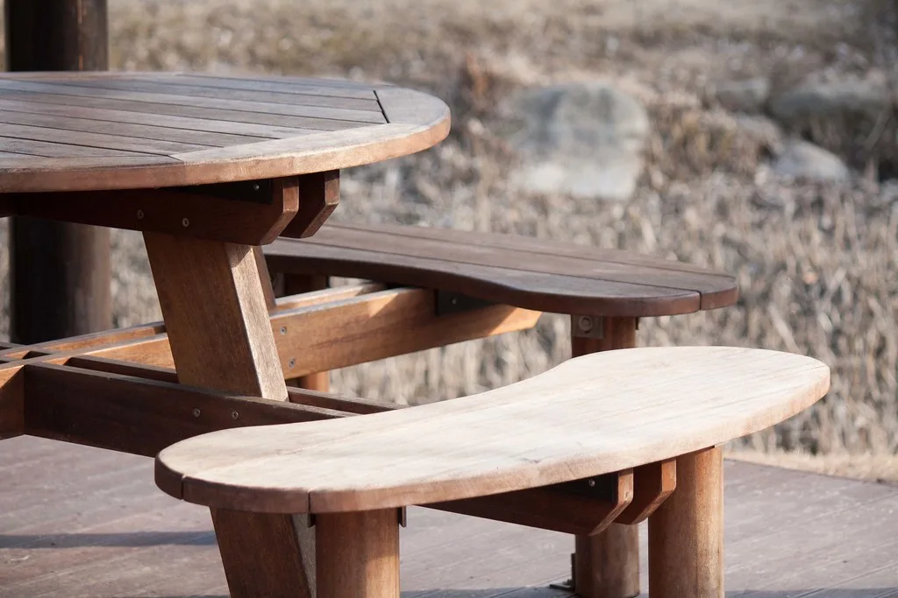
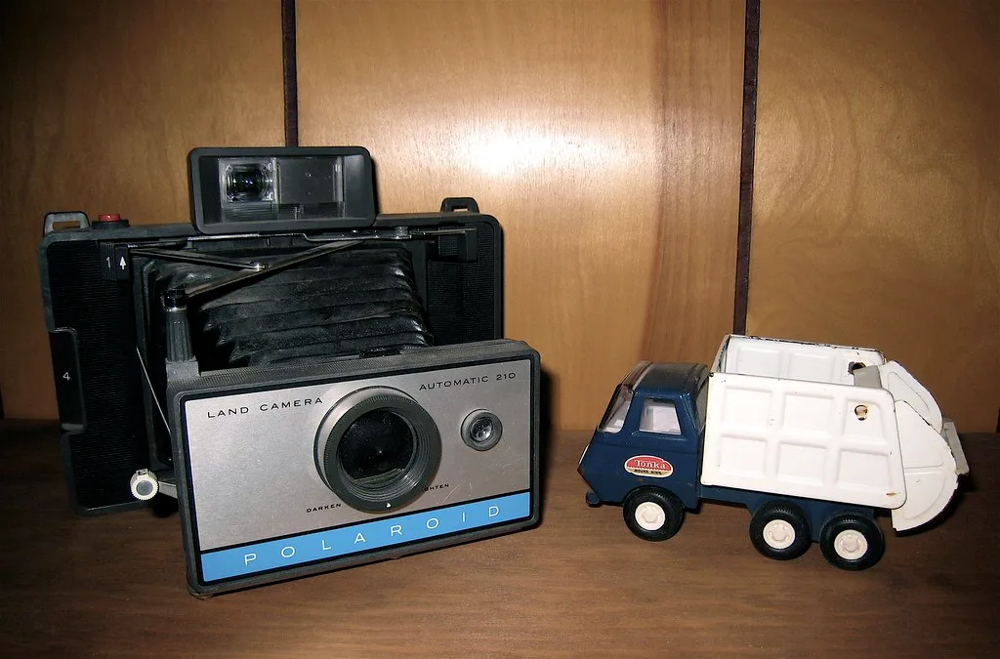
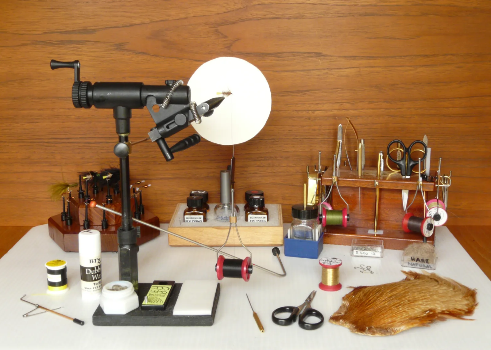
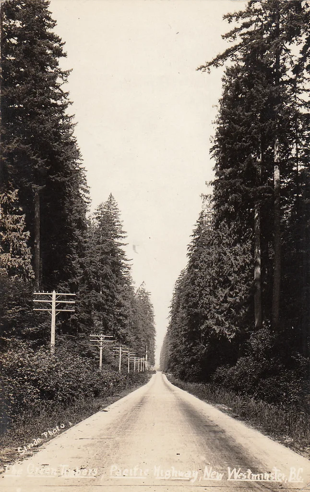

건조에만 18개월 톱을 대기 전에 기다리는 시간
긴 식탁 2400 참나무 · 짜맞춤 · 2025 여덟 명이 앉는 식탁. 못을 쓰지 않았습니다. ↗ 링크
서랍 다섯 물푸레 · 손대패 마감 서랍이 공기압으로 천천히 닫힙니다.
모서리 없는 의자 호두나무 · 증기 굽힘 등받이를 통짜로 구부렸습니다.
벽 선반 시리즈 자작 합판 · 무마감 벽에 나사 두 개로 붙는 얇은 선반.
공방 작업대 미송 · 자가 제작 저희가 쓰려고 만든 작업대입니다.
버린 목재 기록 2024–2026 못 쓰게 된 나무와 그 이유.틈 0.3mm로 맞췄습니다.
어려웠던 것: 처음엔 너무 빡빡해 여름에 안 열렸습니다. 계절 팽창을 계산해 0.1mm 늘렸습니다.
배운 것: 정밀할수록 여유가 필요합니다.
증기 4시간 · 성형 후 건조 3주.
어려웠던 것: 열 개 중 여섯이 갈라졌습니다. 나뭇결 방향을 바꾸고 나서 성공률이 80%가 됐습니다.
지금은: 실패한 여섯 개로 스툴을 만듭니다.
두께 18mm · 하중 40kg.
어려웠던 것: 얇게 만들수록 처졌습니다. 뒤쪽에 숨은 리브를 넣어 두께를 유지하면서 버티게 했습니다.
결과: 처짐 12mm → 1mm.
10년째 쓰는 중.
어려웠던 것: 처음엔 예쁘게 만들었다가 다 긁혔습니다. 두 번째는 갈아내고 다시 쓸 수 있게 두껍게 만들었습니다.
배운 것: 쓰는 물건은 고쳐 쓸 수 있어야 합니다.
갈라짐 41% · 옹이 28% · 뒤틀림 31%.
어려웠던 것: 아까워서 억지로 썼고, 그 가구들이 결국 돌아왔습니다.
지금은: 의심스러우면 작은 소품으로 돌립니다.
제재소에서 켠 판재를 받습니다. 이때 함수율은 30% 안팎입니다.
창고에 세워 두고 기다립니다. 인공 건조로 줄이면 나중에 갈라집니다.
함수율 8%를 확인하고 톱을 댑니다. 여기서부터는 3주면 끝납니다.
못과 나사를 쓰지 않습니다. 계절에 따라 움직일 자리를 남겨 둡니다.
오일을 세 번 먹입니다. 1년 뒤 무상 점검을 갑니다.
가구는 주문 후 최소 6개월이 걸립니다. 건조된 목재가 없으면 더 걸립니다.
먼저 놓을 자리의 치수와 창 방향, 바닥 재질을 알려 주세요. 나무 종류는 그다음에 정합니다.